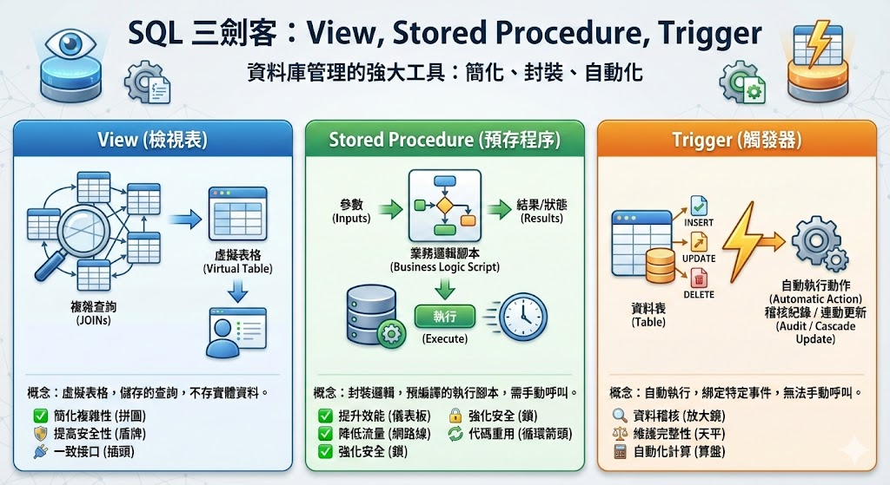

深入解析 SQL 中的 View、Stored Procedure 與 Trigger
在資料庫管理的世界中，除了基礎的 SELECT, INSERT, UPDATE, DELETE 操作外，還有許多強大的工具可以幫助我們更有效、更安全地管理資料。本篇文章將深入探討其中三個經常被提及的「SQL 三劍客」：View (檢視表)、Stored Procedure (預存程序) 和 Trigger (觸發器)。
理解它們是什麼、何時使用以及如何使用，將能大幅提升資料庫設計與開發能力。
View (檢視表)：簡化複雜查詢的虛擬表格
什麼是 View？
View 可以被視為一個「虛擬的表格」或「已儲存的查詢」。它本身不儲存任何實體資料，而是由一個 SELECT 查詢語句所定義。當查詢一個 View 時，資料庫會執行這個預先定義好的查詢，並將結果以表格的形式回傳。
簡單來說，可以將一個複雜、需要連接 (JOIN) 多個表格的查詢儲存成一個 View，未來只需要像查詢一般表格一樣，直接 SELECT * FROM your_view_name 即可，大大簡化了操作。
應用場景
- 簡化複雜性：將複雜的多表連接、彙總函數 (Aggregation) 或過濾條件包裝起來，讓使用者可以用一條簡單的語句取用結果。
- 提高安全性：可以限制使用者只能看到表格中的特定欄位或符合特定條件的資料列，而隱藏敏感資訊 (例如：薪資、個人身份資料)。
- 提供一致的資料接口：即使底層的實體表格結構發生改變 (例如：欄位改名、表格拆分)，只要 View 的定義保持不變，前端應用程式就不需要修改查詢語句，增加了系統的靈活性。
範例代碼
假設有兩個表格：Employees (員工) 和 Departments (部門)。
Employees 表格:
| EmployeeID | FirstName | LastName | DepartmentID | Salary |
|---|---|---|---|---|
| 1 | John | Doe | 101 | 60000 |
| 2 | Jane | Smith | 102 | 75000 |
| 3 | Peter | Jones | 101 | 55000 |
Departments 表格:
| DepartmentID | DepartmentName |
|---|---|
| 101 | Engineering |
| 102 | Marketing |
希望建立一個 View 來顯示員工的姓名及其部門名稱，但不暴露他們的薪資。
-- 建立 View
CREATE VIEW V_EmployeeDepartment AS
SELECT
e.EmployeeID,
e.FirstName,
e.LastName,
d.DepartmentName
FROM
Employees AS e
JOIN
Departments AS d ON e.DepartmentID = d.DepartmentID;
現在，可以像查詢一個普通表格一樣使用這個 View：
-- 查詢 View
SELECT * FROM V_EmployeeDepartment;
結果:
| EmployeeID | FirstName | LastName | DepartmentName |
|---|---|---|---|
| 1 | John | Doe | Engineering |
| 2 | Jane | Smith | Marketing |
| 3 | Peter | Jones | Engineering |
Stored Procedure (預存程序)：封裝業務邏輯的執行腳本
什麼是 Stored Procedure？
Stored Procedure 是一組預先編譯好的 SQL 語句集合，被命名並儲存在資料庫中，以便重複使用。它可以接受輸入參數、執行一系列的資料庫操作 (查詢、新增、修改、刪除)，並回傳結果或狀態。
可以把它想像成資料庫中的一個「函式 (Function)」，將常用的業務邏輯封裝起來，讓應用程式直接呼叫它，而不需要在程式碼中撰寫冗長的 SQL 語句。
應用場景
- 提升效能：Stored Procedure 在首次執行時會被編譯和最佳化，之後的呼叫會直接使用已編譯的計畫，減少了 SQL 解析和編譯的開銷，執行速度通常比單獨的 SQL 語句更快。
- 降低網路流量：應用程式只需要傳送 Stored Procedure 的名稱和參數，而不是整段冗長的 SQL 語句，減少了客戶端與伺服器之間的數據傳輸量。
- 強化安全性：可以授予使用者執行特定 Stored Procedure 的權限，而不是直接存取底層表格的權限。這樣可以精確控制使用者能執行的操作，防止未經授權的資料修改。
- 程式碼模組化與重用：將複雜的業務邏輯（例如：註冊新用戶、處理訂單）封裝在 Stored Procedure 中，不同的應用程式或模組都可以重複呼叫，方便維護和管理。
範例代碼
假設要建立一個 Stored Procedure 來新增一名員工，並傳入相關資訊。
-- 建立 Stored Procedure (以 SQL Server 的 T-SQL 語法為例)
CREATE PROCEDURE sp_AddEmployee
@FirstName NVARCHAR(50),
@LastName NVARCHAR(50),
@DepartmentID INT,
@Salary DECIMAL(10, 2)
AS
BEGIN
-- 設定為不回傳執行筆數的訊息，可提升效能
SET NOCOUNT ON;
-- 檢查部門是否存在
IF NOT EXISTS (SELECT 1 FROM Departments WHERE DepartmentID = @DepartmentID)
BEGIN
-- 如果部門不存在，可以回傳錯誤訊息或代碼
RAISERROR ('Invalid Department ID.', 16, 1);
RETURN;
END
-- 新增員工資料
INSERT INTO Employees (FirstName, LastName, DepartmentID, Salary)
VALUES (@FirstName, @LastName, @DepartmentID, @Salary);
END;
要使用這個 Stored Procedure 時，只需執行：
-- 呼叫 Stored Procedure
EXEC sp_AddEmployee
@FirstName = 'Alice',
@LastName = 'Williams',
@DepartmentID = 102,
@Salary = 80000;
Trigger (觸發器)：自動執行的資料守護者
什麼是 Trigger？
Trigger 是一種特殊的 Stored Procedure，它與特定的表格相關聯，並在該表格發生特定事件 (例如 INSERT, UPDATE, DELETE) 時「自動被觸發」執行。無法手動呼叫 Trigger，它總是被動地回應資料的變動。
可以把它想像成一個安裝在表格上的「監聽器」或「自動化規則」。
應用場景
- 資料稽核 (Auditing)：當表格中的資料被修改或刪除時，自動在另一個稽核記錄表 (Audit Log) 中新增一筆記錄，追蹤是誰、在什麼時候、做了什麼變更。
- 維護資料完整性與複雜約束：執行比標準
CHECK約束更複雜的業務規則。例如，當訂單數量超過庫存時，自動阻止該筆訂單的新增。 - 自動化衍生計算：當一個表格的資料變動時，自動更新另一個相關表格的彙總數據。例如，每當
OrderDetails表格新增一筆項目時，自動更新Products表格的總銷售數量。
範例代碼
假設想建立一個 Trigger，每當有員工的薪資被更新時，就將舊的薪資和變更時間記錄到 SalaryAudit 表格中。
首先，建立稽核記錄表：
CREATE TABLE SalaryAudit (
AuditID INT IDENTITY(1,1) PRIMARY KEY,
EmployeeID INT,
OldSalary DECIMAL(10, 2),
ChangeDate DATETIME DEFAULT GETDATE()
);
接著，在 Employees 表格上建立 Trigger：
-- 建立 Trigger (以 SQL Server 的 T-SQL 語法為例)
CREATE TRIGGER trg_AuditSalaryChange
ON Employees
AFTER UPDATE -- 在更新操作之後觸發
AS
BEGIN
SET NOCOUNT ON;
-- 檢查 Salary 欄位是否有被更新
IF UPDATE(Salary)
BEGIN
-- 將被更新前的舊資料 (deleted 虛擬表) 插入到稽核記錄表中
INSERT INTO SalaryAudit (EmployeeID, OldSalary)
SELECT
d.EmployeeID,
d.Salary
FROM
deleted d; -- 'deleted' 是一個虛擬表，存放了更新前的資料
END
END;
現在，當更新任何員工的薪資時：
-- 更新員工薪資
UPDATE Employees
SET Salary = 65000
WHERE EmployeeID = 1;
這個 Trigger 會自動被觸發，並在 SalaryAudit 表格中新增一條記錄，內容會是 EmployeeID 為 1，OldSalary 為 60000。
總結
| 特性 | View (檢視表) | Stored Procedure (預存程序) | Trigger (觸發器) |
|---|---|---|---|
| 本質 | 虛擬表格 (儲存的查詢) | 可執行的程式碼區塊 | 自動執行的特殊程序 |
| 如何執行 | 透過 SELECT 語句查詢 |
透過 EXEC 或 CALL 手動呼叫 |
由 INSERT, UPDATE, DELETE 事件自動觸發 |
| 參數 | 不接受參數 | 可接受輸入/輸出參數 | 不接受參數 |
| 主要目的 | 簡化查詢、資料安全性 | 封裝業務邏輯、提升效能 | 資料稽核、自動化、強制複雜規則 |
| 回傳值 | 回傳一個結果集 (表格) | 可回傳狀態碼、結果集或輸出參數 | 不直接回傳值給使用者 |

理解 SQL 中的 View、Stored Procedure 和 Trigger 這三項工具，資料庫將會變得更加強大、安全且易於維護！